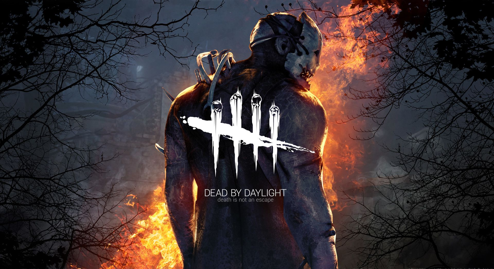
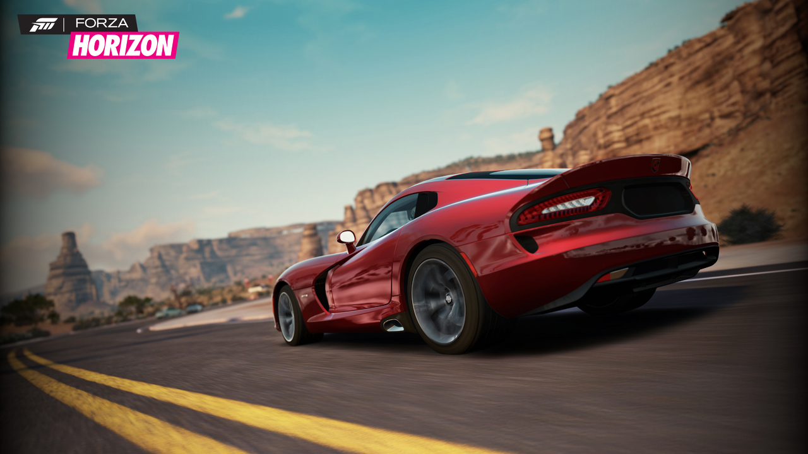
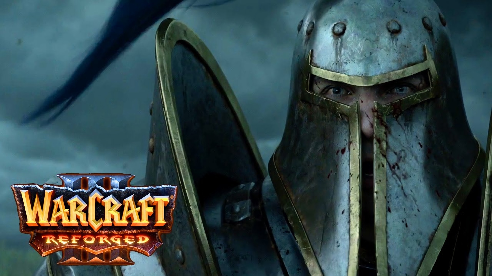

Jak Muzyka Odziałuje Na Graczy?
- Muzyka klasyczna - Jej zadaniem jest ukazanie podniosłaości miejsca, wydarzenia, sytuacji. Gracze często robią się powazni podczas scen z tym gatunkiem myzcznym oraz są pełni skupienia na tym co robią.Wykorzystywana jest przy wielu produkcjach nie zaleznie od gatunku gry, jednym z przykładow może byc seria gier "Mafia" od czeskiego studia "Illusion Softworks"
- Pop - Wykorzystywa w grach z otwartym światem gdzie czas akcji zbliżony jest do współczesnego, często dotępna pod postacią radia.Jej zadaniem jest zrelaksowanie gracza. Przykładem jest tu seria "GTA" od studia "Rockstar" lub seria "Forza Horizon" od studia "Microsoft".
- Rock/Metal - Wykorzystywana głównie w grach akcji or typu slasher. Ma dwa zadania wzależności od gatunku w grach akcji jej celem jest wywołanie agresji oraz skłonienia gracza do przemocy, natomiast w grach typu slasher a ona ukazać potęgę, agresje, oraz bezwględność czarnego charakteru. Przykładem gier typu slasher z wykorzystaniem elementów muzyki rockowej jest "Dead by daylight" oraz "Outlast" natomiast z gier akcji można wyróżnić "Metal Gear Solid"
- Hip Hop - Muzyka często kojarzona z tzw "undergroundem" z Amerykańskimi slumsami i z przeztępczością. Jej zadaniem jest w prowadzenie gracza w świat bezprawia gdzie to bohater jest wym który wyznacza zasady, gracz czuje sie pozbawiany ograniczeń wręcz na myśl przychodzi "Mogę zrobić wszystko". Przykładem jest kultowa odsłowna gry "gta san andreas"
- Instrumental - Muzyka klasyczna dla branży gier, stosowana w każdym symulatorze, grze strategicznej i horrorze. Jej zadanie to wprowadzenie gracza w realia prowadzonej fabuły, często budujaca napięcie lub podnosząca na duchu. Przykładem gier może być najlepszy symulator rycerza "Mount and blade warband" lub seria gier "Warcraft".
- elektroniczna - Gatunek uniwersalny wykorzystywany w wielu produkcjach takich jak "League Of Legends", "CS GO", seria "need for speed ". Zadanie muzyki elektronicznej jest nepełnienie gracza pozytyną energią wręcz pobudzenie go do dalszego działania. Większość osób grających w tzw "ściganki" napewno zna Eurobeat szczgóline fani wchodnich produkcji


